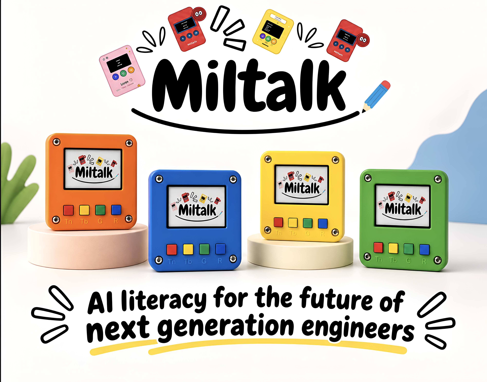

Learn bydoing
Children collect examples, test a fresh thought and learn through what they notice.

Make, test, wonder
Children collect examples, test a fresh thought and learn through what they notice.
Buttons, sounds, pictures and colourful prompts turn curiosity into something tangible.
Every experiment invites children to wonder, make a choice and give it another go.
Look, spot, discover
Point the camera at two kinds of objects and click pictures!
Press TEST and let the kit find clues in the example you collected.
Show something new, see its best guess and keep experimenting.
Listen, clap, discover
Try two different kinds of sounds as input
Press TEST and let the kit do the classification
Make a brand-new sound and see which one the kit thinks it hears.
Our beginning
What if children could do more than watch AI work? Miltalk was created to make space for trying, tinkering and proudly saying, “I made it do that!”
Children today grow up surrounded by machine learning that quietly sorts things on their behalf: which photo belongs to whom, whether a spoken word was understood, what to watch next. Almost all of it happens somewhere they cannot see, and there is rarely a way in.
We wanted to hand them a small piece of it instead. So we built a kit with a camera, a microphone, a screen and a few big buttons. No laptop, no code, nothing to install.
The idea at its heart is classification, the job of sorting things into groups. A child gathers a few examples of two different things, presses a button, and the kit works out for itself what separates them. Then it takes a guess at something it has never seen before. That is genuinely what a machine learning model does, whether it is sorting recycling, reading handwriting or telling a siren from a car horn.
That moment, when a guess comes back right and a child realises they taught it, is the whole reason Miltalk exists.
Bring the fun to your group
Miltalk is a bright fit for classrooms, clubs and camps.
Say hello